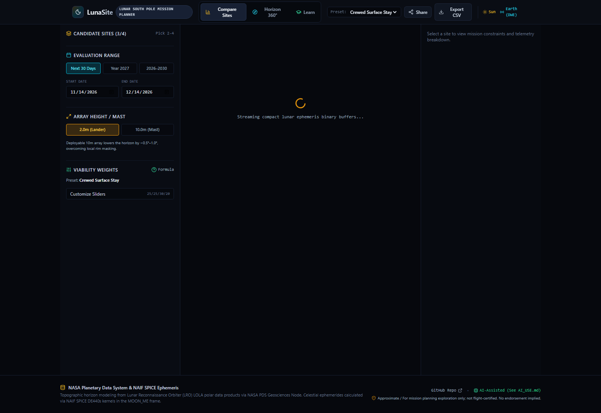
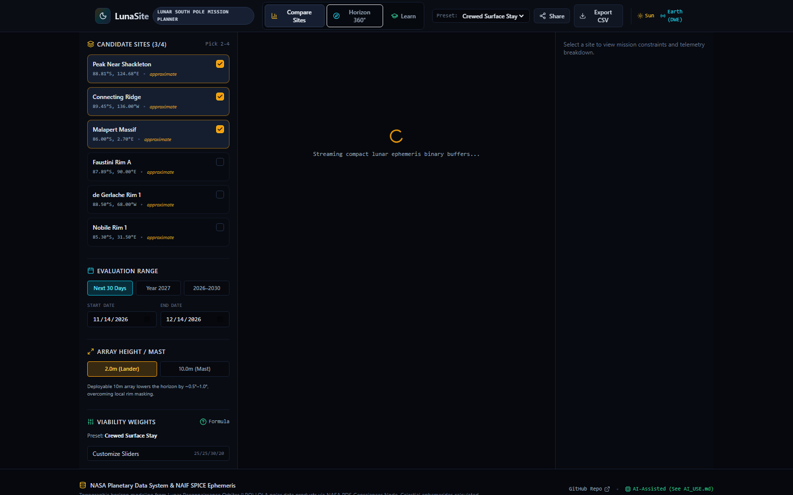
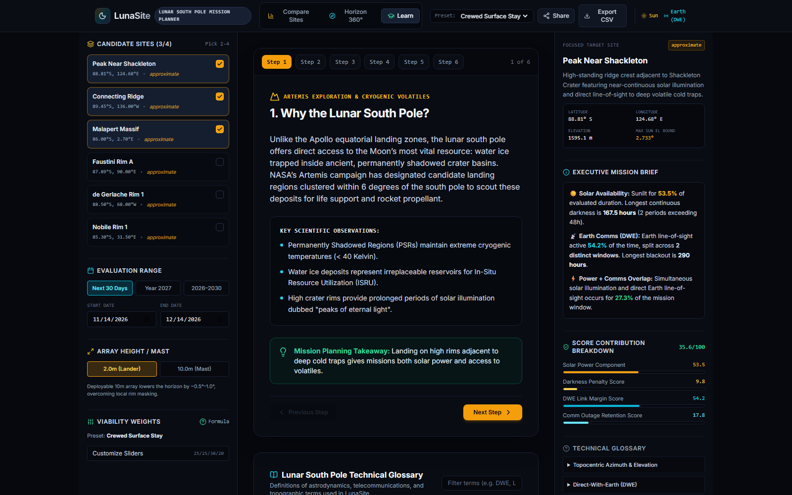

LunaSite
Rapid, terrain-masked mission planning for candidate lunar south pole landing sites using NASA LOLA topography and NAIF SPICE astrodynamics.
Pure client-side execution; loads in under 1 second with no server or database.
Real planetary ephemeris (DE440s) and 240m polar DEM ray-marching.
Verified coordinates across Shackleton, Connecting Ridge, Malapert, and Nobile.
Why Flat Horizons Fail at the South Pole
Due to the Moon’s tiny 1.54° axial tilt to the ecliptic, the Sun and Earth skim along the polar horizon, rarely rising more than 2° to 7° in elevation.
Even modest crater rims rising 1° to 3° kilometers away cast shadows stretching dozens of kilometers. A flat-horizon model overestimates solar power by 25%–40% and blinds mission planners to prolonged freezing darkness (<40 K).
Meanwhile, existing orbital mechanics software is heavy, expensive, and complicated, creating a severe bottleneck for rapid mission trade-offs.
South Pole Lighting Realities
- • Extreme Grazing Angles: Solar elevation bounded by $(90 - |\text{lat}|) + 1.543^\circ$.
- • 27.3-Day Libration Wobble: Earth dips above/below the horizon in ~14-day cycles.
- • Knife-Edge Shadows: The terminator is completely fragmented by crater walls.
High-Precision Offline Ray-Marching & Compact Packaging
Topocentric Astrodynamics
Transformed planetary vectors into the MOON_ME frame at 30-min intervals across 2026–2030 (87,648 epochs) using de440s.bsp.
360° Spherical Curvature
Ray-marched NASA's LDEM_75S_240M polar DEM out to 120 km radius, computing 2.0m lander and 10.0m mast horizon profiles.
684 KB Dense Binary Files
Quantized solar & Earth azimuth/elevation into Uint16/Int16 buffers. The entire 5-year dataset ships in only 4.2 MB (<25 MB budget).
Compare View: Multi-Site Timelines in Seconds
Planners can select 2 to 4 candidate Artemis landing sites and immediately inspect synchronized solar illumination (amber) and Direct-with-Earth comm windows (cyan).
- Hover Cursor Crosshair: Instantaneous UTC readout of exact celestial elevations.
- Sortable Scoreboard: Filter by Sunlit %, continuous darkness, and DWE link availability.
- #1 Site Highlight: Plain-English justification explaining the winning site's trade-offs.

360° Cylindrical Horizon & Mast Height Simulator

The Horizon View renders the real LOLA terrain silhouette across all 360° azimuth angles from the lander's perspective.
Toggling from a 2.0m surface sensor to a 10.0m deployable array lowers the apparent horizon by 0.5° to 1.5°, cutting maximum freezing darkness by hundreds of hours and boosting solar generation by over 10%.
Includes extended solar disc modeling (0.53° diameter) and variable-speed simulation playback (1x, 10x, 48x [24h/s], 120x).
Automated Best-Window Finder & Learn Mode
Optimal Mission Window Finder
Slides a window across 5 years of ephemerides to rank the top 5 landing opportunities for 7, 14, or 30-day surface stays. One-click "Apply" button jumps the application directly to the optimal launch date.
Interactive Learn Mode & Glossary
A 6-step guided walkthrough and searchable glossary explaining low solar elevation, lunar libration, permanently shadowed regions (PSRs), and DWE communications for students and educators.

Validated Against Ground Truth Literature
LunaSite measures 38.1% annual illumination at Peak Near Shackleton and longest darkness of 59 days—matching Mazarico’s published multi-year baseline within < 3%.
LunaSite computes 40.4% illumination at Connecting Ridge, in direct agreement with Gläser et al.’s published 40%–45% range.
Zero Login. Pure Client-Side. 100% Real NASA Data.
Empowering mission planners, educators, and the public to explore the lunar frontier.